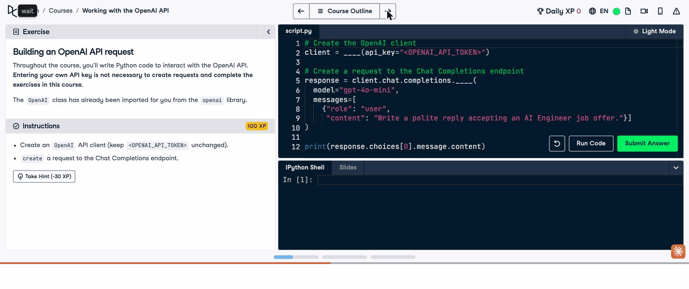
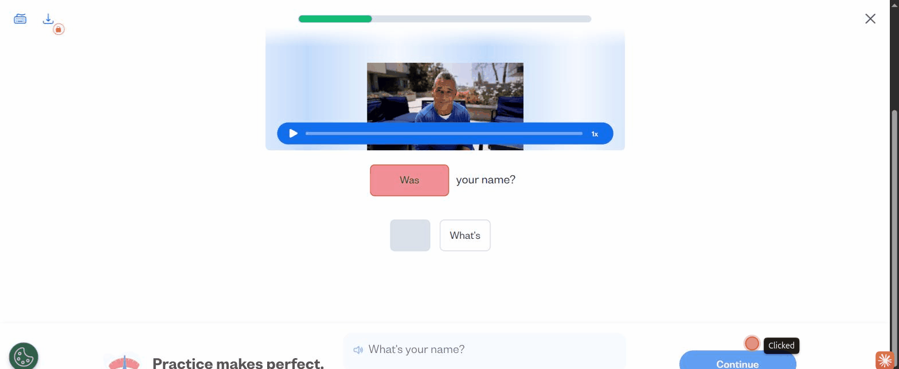
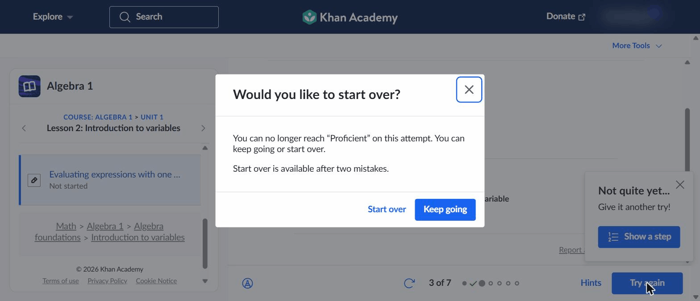
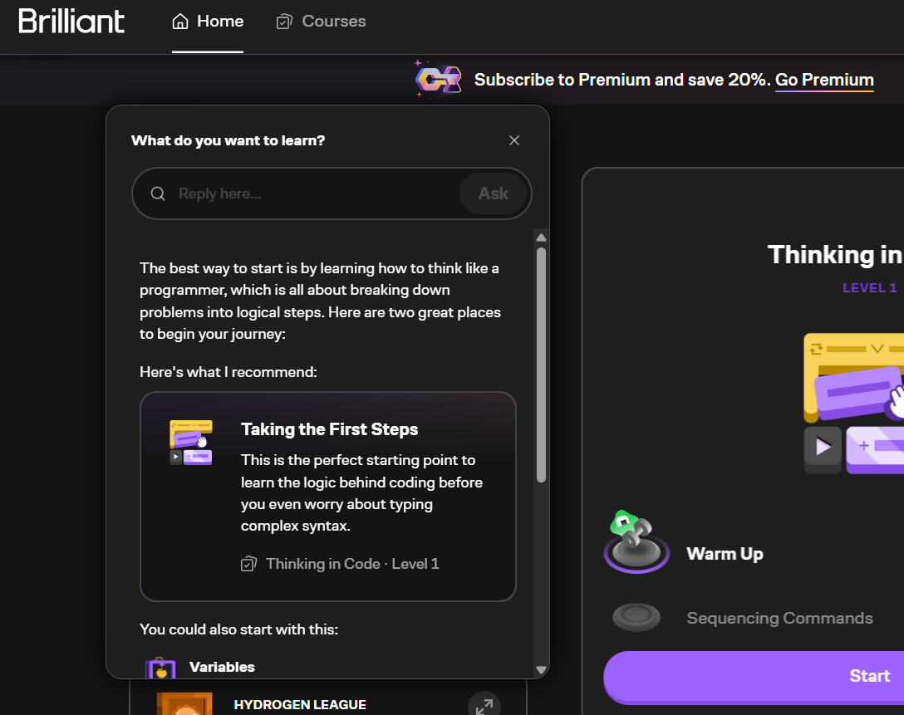

1. The core product bet is not AI.
The durable pattern is an active learning loop. AI can support it, but the loop architecture should come first.
Benchmark synthesis for solve.education
Based on 12 benchmarked features across Brilliant, DataCamp, Busuu, and Khan Academy. This is an artifact-led synthesis for Head of Product, UI/UX, and developers.
The durable pattern is an active learning loop. AI can support it, but the loop architecture should come first.
Busuu and Khan Academy show that correction, hints, and worked steps are where grading becomes teaching.
Khan Academy's accuracy gate is the clearest signal: progress should mean competence, not mere task completion.
The benchmarked apps optimize different parts of the loop. solve.education should connect these stages so each learning action can become evidence of job readiness.
Each pattern below groups multiple CSV rows into one product decision area. Evidence grades reflect the artifact quality, not proven business impact.
Brilliant and Khan Academy reduce "what now?" into one recommended path. This is useful for activation, but only if the handoff lands the learner in practice quickly.
DataCamp, Busuu, and Brilliant place learners in action instead of making them consume content first. This is the strongest candidate bridge from learning UX to validation-ready skill evidence.
DataCamp, Brilliant, and Khan Academy keep the learner inside the task when they are confused. The design problem is support dosage.
Busuu and Khan Academy use the feedback panel as a teaching moment. This is the highest-confidence pattern in this benchmark, pending domain transfer validation.
Khan Academy makes progress depend on accuracy. solve.education should go further and connect mastery to job-relevant proof.
DataCamp and Busuu show strong habit mechanics, but XP and leagues can inflate empty activity if not tied to mastery. Busuu's community correction is promising, but the receiving side and correction quality were not observed.
Drive links from the CSV were attempted, but Google returned sign-in pages. The report therefore renders local artifact equivalents and keeps Drive URLs in the evidence manifest.
CSV row 4. Local artifact matched to the Drive evidence.

1 2 3CSV row 7. The feedback panel explains the correct form instead of only marking the answer wrong.

1 2 3CSV row 10. Progress is capped when accuracy falls below the threshold.

1 2 3CSV row 1. The entry point turns a broad intent into a specific learning path.

1 2 3These are not final specifications. They translate the benchmark patterns into product capabilities that should be prototyped, instrumented, and validated.
The system should let a learner state a goal and receive one recommended starting task with a short rationale, difficulty signal, and direct start action.
The system should provide a zero-setup task surface where learners can attempt, submit, retry, and produce observable work or answers.
The system should return feedback that explains the correction, shows the right form or next step, and routes the learner into another attempt.
The system should offer escalating help levels, starting with hints before answer reveal or tutor intervention, and log each help event.
The system should update mastery based on accuracy and independent performance, not only completion, and should expose the current mastery state to the learner.
The system should preserve an auditable trail of attempts, feedback, retries, hint usage, mastery updates, and final task outcomes.
The system should bring learners back through recaps, streaks, challenges, or next-step prompts that point to meaningful practice rather than empty activity.
The system should track recommendation acceptance, task starts, submissions, wrong answers, feedback exposure, retries, hint escalation, mastery changes, and return behavior.
The benchmark is strong enough to shape prototypes. It is not strong enough to claim business impact. These tests should come before heavy investment.
| Priority | Question | Method | Primary metric | Guardrail |
|---|---|---|---|---|
| 1 | Does active practice beat passive learning? | A/B task surface vs content-only path | Delayed unaided performance | Completion quality, not just completion rate |
| 2 | Can feedback improve correction? | Rich feedback vs bare correctness marker | Next-attempt accuracy | Time cost and learner frustration |
| 3 | Does help recover stuck learners? | Instrument wrong-answer recovery funnel | Retry completion after hint | Delayed retention for heavy-help users |
| 4 | Can mastery signal job readiness? | Accuracy gate plus independent transfer task | Transfer-task pass rate | False confidence and coaching overhead |
| 5 | Do return loops create real progress? | Retention cohort with mastery controls | D7 return plus mastery gain | XP gaming and low-quality attempts |
| Row | Platform | Feature | Destination pattern | Disposition |
|---|---|---|---|---|
| 1 | Brilliant | Smart Search | Guided start | Included |
| 2 | Brilliant | Koji AI Learning Companion | Stuck-point recovery | Included with caveat: full tutor behavior not directly observed |
| 3 | Brilliant | Interactive Non-MCQ Learning Experience | Learn-by-doing | Included |
| 4 | DataCamp | Interactive learn-by-doing environment | Learn-by-doing | Included |
| 5 | DataCamp | Progressive AI tutor and helper | Stuck-point recovery | Included with split between observed hints and unobserved AI depth |
| 6 | DataCamp | Motivation and retention system | Return loops | Included |
| 7 | Busuu | Bite-sized instructional feedback | Feedback that teaches | Included |
| 8 | Busuu | Community correction | Return loops and skill evidence | Included with caveat: receiving side not observed |
| 9 | Khan Academy | Mastery-state model | Mastery signals | Included |
| 10 | Khan Academy | Accuracy-gated leveling | Mastery signals | Included |
| 11 | Khan Academy | Productive-struggle remediation | Feedback and recovery | Included |
| 12 | Khan Academy | End-of-set mastery summary | Guided next step and return loop | Included |
The CSV contains 27 unique Google Drive URLs. A network fetch was attempted into drive-images/. Google returned authenticated sign-in HTML rather than image binaries for the downloaded files, so the HTML uses verified local PNG artifacts and the Drive links remain documented in evidence-manifest.md.
{kind=link}
{kind=link}
{kind=link}
{kind=link}